| Author |
Comment |
queensgirl

It was all Sophia's idea, I
swear!!
Posts: 454
(3/23/04 6:49
am)
68.48.100.42
Reply
| Edit
| Del
|
Re: Oprah - What
the Diner means to me
Wow, what can I say that hasn't been said already? I am not the
most eloquent writer, so thank you ladies for taking all my thoughts
and expressing them in the most beautiful way!!
1) Type of
household we were raised in (single parent/double parent) -Single
mother
2) Age at which we became parents- 33, me 26, DH
3) How
many children we want to have-2
4) Household income-One income,
barely enough to get by in the D.C. area!
5) Marital
status/happiness-Happy most days, working on it constantly
6)
Political party-Independent
7) Where we live-Northern
Virginia
8) SAHM vs. working mom-SAHM
9) Religion-Roman
Catholic
10) Level of education-B.A., Queens College
-Vicki
Sophia Marilinda, April 23, 2002
|
MommyToCarolyn

We are allowed to have a life
outside the boards?
Posts: 1470
(3/23/04 9:55 am)
68.193.151.62
Reply
| Edit
| Del
|
Re: Oprah - What
the Diner means to me
First of all, I say you just print out this post, put a cover
letter on it and send it to Oprah. I think it pretty much sums up
everything.
I stumbled across the epregnancy boards when I
was pg with Carolyn. I started going back frequently and before I
knew it I was sucked in. I got so much good information that nobody
bothered to tell me about IRL. Over the years (and moving to the
private board), this place has become more about us in general than
just pg. We now share all aspects of our lives, not just what is
happening with our children. I look forward to coming to the boards
everyday to see what everyone is up to. It's a great place to share
our joys, our sorrows, our fears, frustrations and happiness.
1) Type of household we were raised in (single parent/double
parent) - two parents(me), divoraced parents (DH)
2) Age at which
we became parents- 30, me 32, DH
3) How many children we want to
have-2
4) Household income-Very comfortable
5) Marital
status/happiness- Married and very happy
6) Political party-None,
but tend to lean toward Republican
7) Where we live-NJ
8) SAHM
vs. working mom - Working mom (currently on maternity leave)
9)
Religion-Methodist
10) Level of education-Masters in statistics
Sara,
dh Chris
dd Carolyn 4/19/02, ds Andrew 3/2/04
 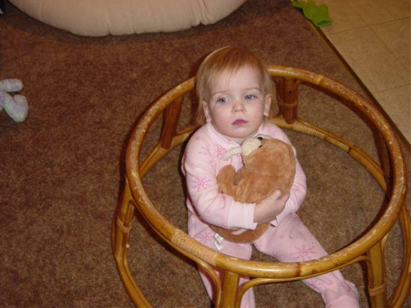 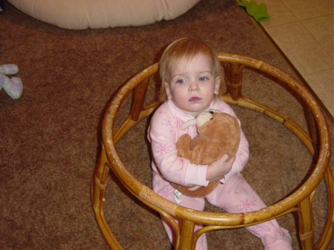 |
Anne0403

Posts:
1138
(3/23/04 2:47
pm)
65.70.153.236
Reply
| Edit
| Del
 |
Re: Oprah - What
the Diner means to me
As I read all of these posts I am getting teary. I don't think that
I actually realized how much you all mean to me until I started
reading these. I knew that you all were an important part of me, I
guess I just didn't know how important. I have always felt that this
board is a great place to get information and I have always
considered everyone here my friends. Rarely does a day go by where
something doesn't come up that we have previously covered here. I
can always respond, "I have a friend that when XXX happened to her
son/daughter, she yyy". However, I'm not sure I ever realized what
an amazing gift you all are. How many people can say that they have
access to this much diverse information, this many friends to share
with, laugh with, and love with? I feel your pain, I share you
happines, I cry with you, and I laugh with you. Just the way I do
with my IRL friends, only maybe a little more, becasue I know I am
more open with you. We truly are a very blessed group of women. You
all mean so much to me! 
1) Type of household we were raised in
(single parent/double parent) double
parent until my mother died when I was 22, dh was raise by his mom,
never met his dad until he was 21
2)
Age at which we became
parents I was 25, Rick was 32
3) How many children we want to
have3 maybe 4, Rick says 5
4) Household income we get by and have what we
want/need, but there isn't ever alot of extra
5) Marital status/happinesshappily married,
although we definately have our rough times
6) Political party I am very un-political
7) Where we liveLenexa, KS
8) SAHM vs. working mom WOHM
9) Religion
Episcopal
10) Level of
education some college, and don't
forget my cosmetology license 
~Anne
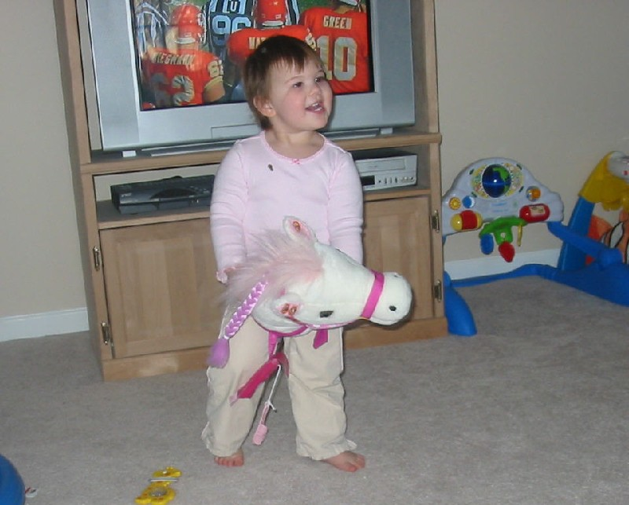 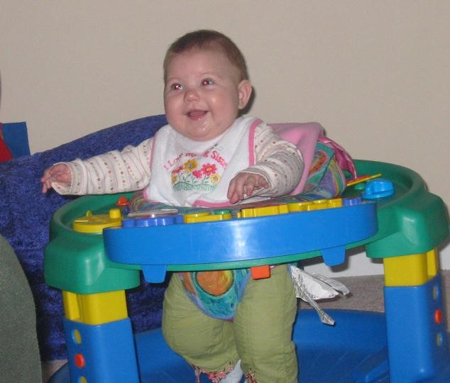
Carley
Rose, born
3/26/02
Aubrey Marie,
born 7/9/03
"An accident is something you would
change if you could,
but a surprise is something you didn't know
you wanted until you got it!"
|
tinack

I am the sex kitten after
all!!
Posts: 569
(3/23/04 5:35
pm)
207.253.110.155
Reply
| Edit
| Del
|
Re: Oprah - What
the Diner means to me
Wow - I am so glad we are finally doing this !!!
The only thing
I have to add to all the great comments written so far is that I
found that while I was pregnant & even now, you girls are
quicker to answer my questions than my ob-gyn & ped. Everytime I
am questionning something, you are the first people I will contact
for some answers and you have never let me down !!
1) Type of
household we were raised in (single parent/double parent) - double
parents, both dh and I
2) Age at which we became parents - 30
3) How many children we want to have - 1 maybe 2
4) Household
income - 50000$
5) Marital status/happiness - couldn't be better
!! - I am so blessed
6) Political party - liberal but
very-unppolitical !
7) Where we live - Hemmingford QC
8) SAHM
vs. working mom - I am a little bit of both !!
9) Religion -
catholic
10) Level of education - college
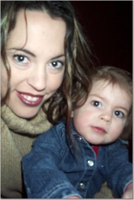
|
aprilmom2be

I don't want to hire a freak.
Posts: 1838
(3/23/04 10:51
pm)
12.65.120.101
Reply
| Edit
| Del
|
Re: Oprah - What
the Diner means to me
1) Type of household we were raised in (single parent/double
parent) me- two parent, DH- went from two parent to one to two
2)
Age at which we became parents- me 33, dh 34
3) How many children
we want to have- 2
4) Household income- we're fortunate, but
willing to accept more
5) Marital status/happiness- very
happy
6) Political party- we both vote based upon the
candidate/issue- we're not strict party followers
7) Where we
live- Huntington Beach, CA
8) SAHM vs. working mom- working
mom
9) Religion- me- Serbian Orthodox, DH- Catholic
10) Level
of education- both college degrees
So many have expressed my
thoughts more eloquently than I would have. I'll just add that this
board allows me to spend as much time as I like focusing on my
daughter without judgement and without driving my irl friends or DH
insane. I've come here to talk about Kaya's problems before I've
called friends or family, because its easier in some ways than
having to exert the energy necessary to interact in person. I tell
people about people I know from here or their experiences as though
they are my neighbor or lifelong friend. I've been coming to these
boards since ttc Kaya and never would have imagined I would have
become as vested in the experience as I am. I wouldn't want to have
to move forward without you all.
Aprilmom
Kaya 4/15/02
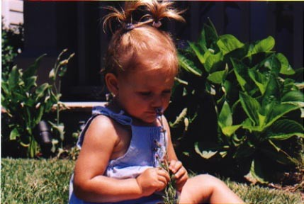
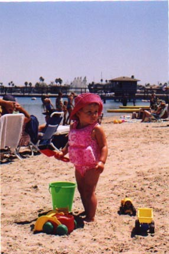 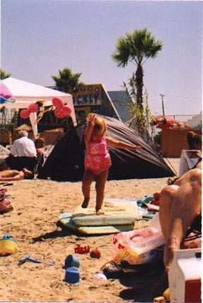
|
ColesMomm
Posts:
979
(3/24/04 11:01
am)
67.1.75.181
Reply
| Edit
| Del
 |
Re: Oprah - What
the Diner means to me
1) Type of household we were raised in (single parent/double
parent) - double parents, both dh and I
2) Age at which we became
parents - 32 (me) 34 (dh)
3) How many children we want to have -
2 or 3
4) Household income - Currently living on one income.
Comfortable but have to do without some extras for the time
being.
5) Marital status/happiness - very happy
6) Political
party - republican
7) Where we live - Great Falls, Montana
8)
SAHM vs. working mom - currently SAHM
9) Religion -
catholic
10) Level of education - We have three bachelor's
degrees between the two of us.
Posting again on this thread
because my first post was more from a brainstorming perspective.
This time, I'll go into more of how the board has been good for me
personally.
I do appreciate having a place I can go talk
about babies and children at length. I know the gals on the board
will always be there to discuss my questions and concerns, no matter
how many I have all at once or how odd they may be. I find it so
interesting to watch my child grow up and I like having people who
are just as interested in the topic to talk about it all in depth
with on a daily basis. It's also very reassuring to know that other
children are almost always going through the same thing as my son at
the same age. I feel like I have a window on the lives of dozens of
his peers. So far it has been a remarkable way to learn about child
development... so much better and more comprehensive than even the
best child development manual.
(On a side note, I have heard
that one important aspect of preventing child abuse is for the
parents to have a solid knowledge of normal child development.
Parents who really understand what is normal behavior for their
child at a certain age are more likely to have expectations that are
in line with reality and are better able to deal constructively and
in a timely manner with problems that may arise. I think this is a
big plus for ALL the chldren whose parents are involved with
something like this.)
With new parenthood, the highs are high
and the lows are low. No one understands that quite as well as
others who are going through the same things at the same time. We
decorated our nurseries together, talked through our fears about
labor and delivery, celebrated all those 1st year milestones and 1st
birthdays. It's amazing to me that time has sped forward and the
babies are now full fledged two year old toddlers, many of them big
brothers and sisters. (or soon to be) How can I begin to sum up
everything that this group has meant to me in one post? The memories
of these past three years are sure to be some of the most poignant
of my life, and The Diner gals are unquestionably a part of that.
Our son was one of those newborns who cried a lot, didn't
nap during the day or sleep well at night, and needed to be carried
continually. (not rocked or held continually, CARRIED continually.)
My husband and I were completely exhausted, but for some reason, we
thought it was fairly normal newborn behavior. I had been involved
with the board during pregnancy, but didn't really get back to it
until my son was about a month old. It was then that I realized that
not all newborns were like this and talked with his pediatrician. He
was diagnosed with gastroesophageal reflux (GERD) at 7 weeks. Once
treatment was started, things began to improve drastically for
us.
The medical community is discovering that the painful
variety of GERD in infants is more common than anyone suspected in
the past and more babies are now being helped. (It is now estimated
that at least 1 in 20 babies suffers pain from GERD) Not
surprisingly, there were other babies in our group that were also
being treated for this problem. The opportunity to discuss the
stress involved with other Moms who were going through it with their
babies at the same time helped me immeasurably, especially when most
of the people I know IRL had never heard of GERD in
babies.
Cole has had some ongoing health concerns that have
made some medical testing necessary. It's hard when your child is
not 100% healthy, but being on the board has helped me keep it all
in perspective. I have realized that most families go through
something similar at some point while raising children. The key
really is to count your blessings every day.
I like that the
group has moved forward to talking about other things besides babies
and children as well. There is always some fun topic to read about
when I'm looking for something interesting in my day.
Nadelle
DH
Shawn
and our son Cole
born
4/25/2002
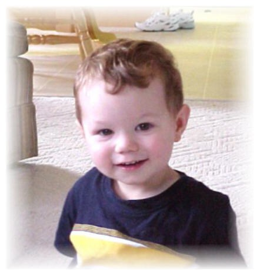
|
 carlap2 carlap2

Posts: 6908
(3/25/04 12:32 am)
207.81.50.124
Reply
| Edit
| Del
ezSupporter
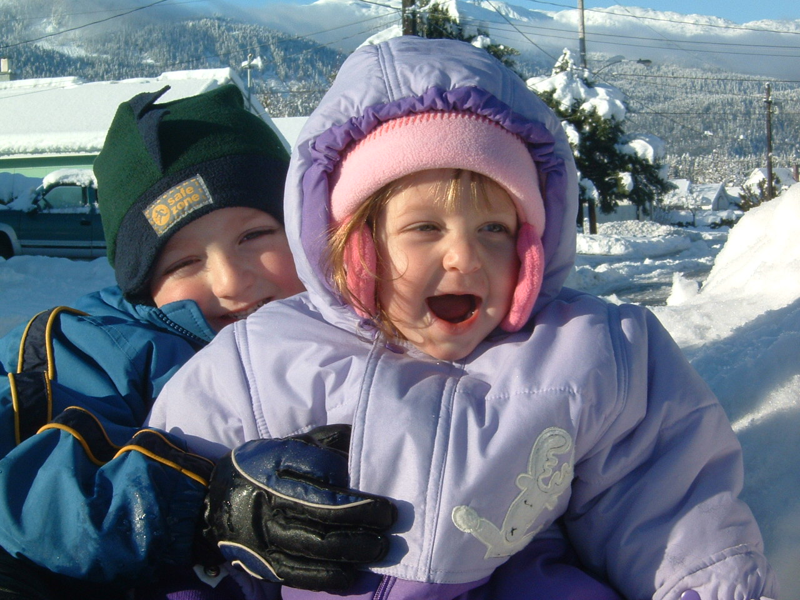 |
Re: Oprah - What
the Diner means to me
I gotta come back to this.. I love everyones responses :eart
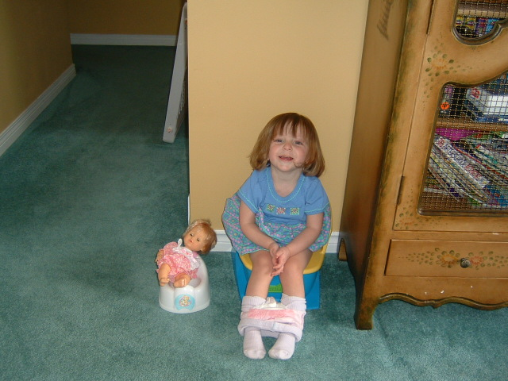
Potty
Time
Carla and Bill
Benjamin Logan~Nov
14 98
Lily Josephine~May 5 02
|
 Momma
Rosie Momma
Rosie
Posts:
1036
(3/25/04 9:10
am)
67.68.15.50
Reply
| Edit
| Del
ezSupporter
|
Re: Oprah - What
the Diner means to me
I'm sure I'll have to come back as well to edit or repost in a more
concise way...I'm not terribly good about putting my thoughts and
feeligs into words others can understand.
1) Type of
household we were raised in (single parent/double parent) Stereotypical nuclear
family
2) Age at which we became
parents We were both 26
3) How many children we want
to have 3 probably
4) Household
income We are getting by okay, but
had a really rough start that led to debt problems. It's getting
under control and we are starting to breathe easier these days. DH
has a good job, and if we keep to the budget, we should do well,
even when I'm not working...not a lot of luxuries, but not
struggling for the necessities
either.
5) Marital
status/happiness We have our moments,
but we're both in it for the long haul. We have our good patches,
and our rough patches, but we're really working at it and committed
to the marriage.
6) Political
party Politics? I don't do
politics.
7) Where we
live mining town in Northeastern
Ontario, Canada
8) SAHM vs.
working mom I'm a working mom right
now, but my life long dream of being a SAHM comes true when baby #2
arrives 
9) Religion Grew up in the Salvation
Army, now we attend a United church...protestant, I guess.
10) Level of
education a year of Early Childhood
Education at the college level...never completed.
I will
never be able to explain how much I appreciate and feel lucky to be
involved in this community. I only became very involved at GeoParent
a few weeks after Joshua was born but I wish it had been sooner.
GeoParent is great, but I feel much more able to be open at the
Diner, where I know and trust who is here. There have been many
benefits that have come of it, but the thing that has truly
benefitted me the most was knowing that I wasn't going through this
alone. We all have our own issues as time goes by, and so many times
when I felt so desperate for answers, I'd post about it or read
someone elses post about it, and just knowing that I wasn't alone in
that dilemma gave me the comfort I needed. It may not have solved
the problem, but hearing someone else say 'Me too!' can make a world
of difference. I have a rather small social circle, and a rather
small family, and no where 'in real life' would I have found people
with such a wide range of experience and advice.
And that's
something too...we often use the term 'in real life' to describe our
offline world, but it's not very accurate. I've really come to
realize that this little cyber-world we have created is just as
real. I have no doubt that everyone here is who they say they are,
and are showing their true selves...probably even more so then they
would offline because the anonymity, for lack of a better term,
really allows you to put it all out there, instead of acting how you
think peope want you to act. I'm pretty shy and reserved in person,
but here I really feel the freedom to say what I think and how I
feel and just be totally relaxed, which is a great feeling.
Nowhere else could I go somewhere and have so many women
giving instant support, and a shoulder to lean on, even if it only
figuratively. I believe it is genuine too, because I know when I am
offering my support, I mean it totally. I didn't really get into the
whole message board thing thinking that I would form sincere
friendships and comradery and connections. I genuinely feel happy
when someone has something to celebrate, and worry when someone is
facing scary times, and sadness and tears when someone is grieving.
The girls here REALLY are my friends.
I'm realistic about it
too though...if we did all get together for any extended amount of
time, our differences would matter more and we would fight or
disagree as friends and family do, feelings would get hurt, and that
IS because it is so real. However, since the odds of that happening
(an extended, all-inclusive getting together) is astronomical, it's
like we get all the benefits, without having to endure the
negatives.
Gosh, all that typing and I only talked about a
few of the points that are floating around in my head. The bottom
line, I guess, is that even if my offline friends and family roll
their eyes at the mention of my 'internet friends', I wouldn't trade
this for anything. If they were a member of such a great community,
they would understand too.
RoseAnne,
mommy to
Joshua - April 9/02
Baby #2 due August
12/04!
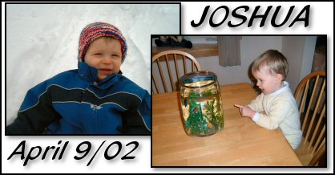
Co-host of
the Canada
forum on SheKnows
E-Mail Me!
|
ImNotReallyAWaitress78


I also have one that involves
a wet t-shirt contest and getting
my ass smacked while
swinging
from the rafters of a boat.
Posts:
1926
(3/26/04 3:52
pm)
68.248.193.193
Reply
| Edit
| Del
ezSupporter
|
Re: Oprah - What
the Diner means to me
These are great stories. It is amazing all that we have been
through.
1) Type of household we were raised in (single
parent/double parent) me: double
until I was 17 DH: double
2) Age
at which we became parents me: 23
DH: 27
3) How many children we
want to have 1 or 2. Still
undecided
4) Household income Somewhere between $1 -
$1,000,000,000
5) Marital
status/happiness Very happily
married for 2 years
6) Political
party I swing both ways.
7)
Where we live Grand Rapids,
MI
8) SAHM vs. working mom SAHM, but go to school full
time
9) Religion Raised Catholic, but consider myself
nondenominational now.
10) Level
of education Currently working on a
double BS in Marketing and
Management
The women I have
meet on this message board have been my support system for the past
2 1/2 years. When I first met some of these women I was was in a new
relationship, recently found out I was pregnant, and had just moved
away from my family and friends. I felt very alone and afraid. I
wasn't sure what was going to happen to my life. If I was going to
be a single mom or not. I found it so helpful to have a place to
turn to and have people to talk with.
These women have been
with me through all the major milestones in my life thus far; my
marriage, the birth of my first child, moving over and over, the
purchase of our first home and even graduating from college.
Whenever I feel I am lacking in support or have a question of any
type, I know I can come to the board and these women will be there
with knowledge, support and trust.
The boards have helped me
so much for the past 2 1/2 years. I truly don't know what I would do
without you all.
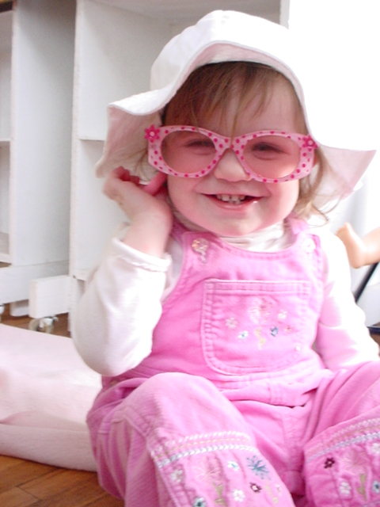 
|
PseudoJenn


I'm feeling really bad about
my sisters honeymoon suite
that night..
Posts:
486
(3/26/04 5:23
pm)
156.34.174.79
Reply
| Edit
| Del
ezSupporter
|
Re: Oprah - What
the Diner means to me
There have been so many heartfelt and wonderful responses
already!!! 
The women on this board
are amazing. They've been there for me through the birth of both of
my boys and the girls are always supportive and caring about
anything going on in my life. sorry... L woke up for
feeding!
1) Type of household we were raised in: (single
parent/double parent) Double Parent.. DH Single Parent.. Divorced
when he was 5yrs old.
2) Age at which we became parents: I was
24, Tom was 28
3) How many children we want to have H
wants 2 , I want 3 H
wants 2 , I want 3
4) Household income: just enough to be
comfortable
5) Marital status/happiness: happily married, always
a work in progress though!
6) Political party: Not
political
7) Where we live: New Brunswick, Canada
8) SAHM vs.
working mom: SAHM now!
9) Religion: Roman Catholic.. though, not
currently practicing
10) Level of education: College Diploma
-
Jenn
Kiernan
Ethan James - 04/21/02 - 8lbs 14ozs - 21"
Lochlan
Thomas Kaelan - 02/25/04 - 10lbs 4ozs - 22"
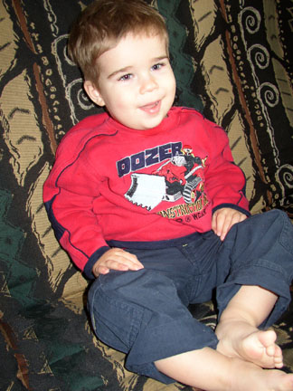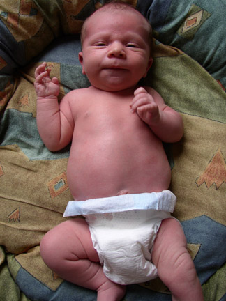
|
benjaminsmom
Posts:
1192
(3/29/04 1:15
pm)
131.204.140.96
Reply
| Edit
| Del
ezSupporter
|
Re: Oprah - What
the Diner means to me
) Type of household we were raised in: (single parent/double
parent) Both Double Parent
2) Age at which we became parents: I
was 28, Tom was 27
3) How many children we want: 2
4)
Household income: we have enough and not too much more
5) Marital
status/happiness: very happy in our marriage, though we have bumps
in the road, nothing major
6) Political party: WHAT? That is too
much to think about
7) Where we live: Opelika, AL
8) SAHM vs.
working mom: Working Mom
9) Religion: Baptist
10) Level of
education: 4 yr college degree, a few MBA classes done
I
don't know where to begin and what to say that hasn't already been
said. I have "known" most of the ladies in this community since
August 2001. I had just found out that I was pregnant, and was
searching the internet for information on pregnancy. That is when I
found the boards for the first time. I remember thinking that it was
great to have a world of information from ladies who were
experiencing the exact same things that I was or wasn't experiencing
in my pregnancy. No matter what my concern was, someone had been
there or was experiencing the same thing on that very same day. I
was stuck then, I had to go back every day to see what was going on
with everyone. I really felt like I was getting to know these women.
Time passed and I delivered Benjamin. I was so confused and
sleepy!!, that I wasn't on the boards as much as I had been. Slowly
but surely, I got back in the groove and found that it was just as
much fun after pregnancy as before. You still have questions when
you have a newborn and then when you have a toddler. These amazing
women have always been there with an answer or an encouraging word
or a "shoulder" to lean on. Not only have we shared pregnancies and
babies but we have also shared pain and grief. The not so pretty
side of life. I feel that when you are able to post something very
personal about yourself and know that there are MANY women thinking
about you and praying for you (from those who pray) it is an
encouragement. We are all from so many walks of life, backgrounds
and still share and encourage and uplift one another - sometimes in
ways that we do not even realize. I have shared so many laughs with
these ladies. I have laughed out loud and had people wonder what I
was lauging about. I can't image how many laughs there would be and
how many tears (of joy - and sorrow for those we have shared grief
with) there would be if we were all in a room together. The ladies
here have brought me out of sad times and have shared my happiness
more times that I could write about. Thanks ladies! You are all my
friends as any of my IRL friends. I feel like I have known you all
for a long time and that you all know more about me than some of my
IRL friends. THANKS for everything and for always being here when I
get here!!

| |